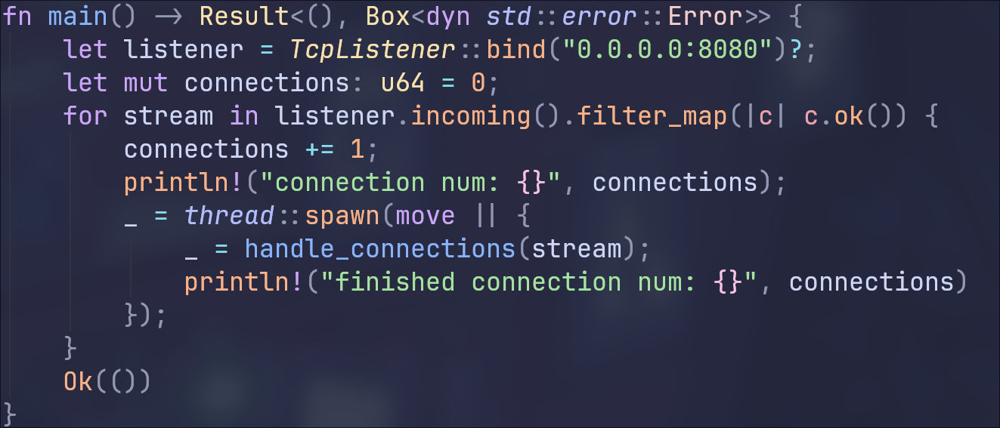

This is actually more than a website, I actually wrote the webserver powering it. A webserver is basically the thing giving these pages out to you. I wrote the webserver in a language called Rust. To get the basic webserver working I followed a guide. After I had the basics working I started editing it to fit my needs. Throughout this whole time I was trying to follow the HTTP standard, which helps diffrent things communicate with eachother.
Implementing these basics has given me a stronger understanding of how html, css, and javascript run the web, and doing it all in Rust gave me an even better understaning of it, speaking of that, what does the code look like?
This looks confusing, I know. But it is not as confusing as it seems. The first important part is the let listener = TcpListener::bind("0.0.0.0:8080")?; This line creates a TcpListener and binds it to address 0.0.0.0:8080, the address of 0.0.0.0 means it is from my computer, and the port of :8080 means that it is on port 8080. (hey that looks familiar, look at the URL)
The next thing this code does is create a loop, using the
for stream in listener.incoming().filter_map(|c| c.is_ok()). All you need to know is that this line iterates over the incoming data, filtering to get rid of bad data.
The final important part is the _ = thread::spawn(move || { _ = handle_connections(stream);});, this creates a new thread and then runs a handle_connections() method that I wrote.
The handle connections method parses the data, then formulates a response, when formulating the response the first thing I do is check what file it is asking for, and then try to read that file, after doing some validation. After that I just write the response back to the client.
The main this I want to improve about this website is the parseing. Right now it discardes any data that is not the first line. The data that I throw away generally has useful information, like types of compression I could use and